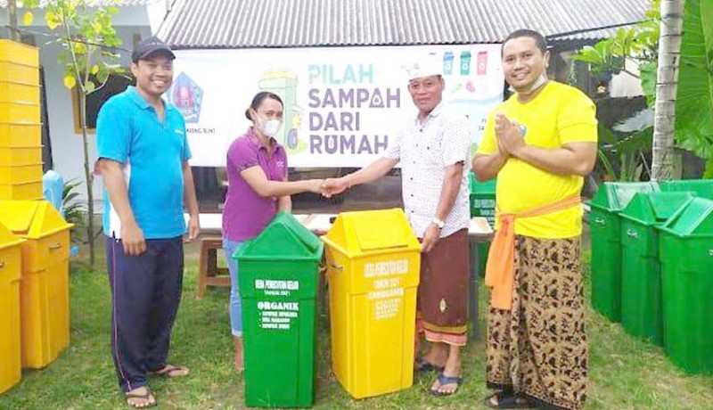

Sampah telah menjadi persoalan serius di berbagai wilayah, baik perkotaan maupun pedesaan. Pertumbuhan penduduk dan aktivitas ekonomi menyebabkan volume sampah meningkat setiap hari. Jika tidak dikelola dengan baik, sampah dapat mencemari lingkungan, mengganggu kesehatan, dan menurunkan kualitas estetika.
Pengelolaan sampah berbasis sumber adalah strategi yang menekankan pemilahan dan pengelolaan sampah langsung dari tempat asalnya, seperti rumah tangga, sekolah, pasar, dan kantor. Tujuannya adalah mengurangi beban TPA dan memaksimalkan pemanfaatan sampah.
Pengelolaan sampah berbasis sumber bukan sekadar program, tapi gerakan perubahan perilaku. Jika setiap individu bertanggung jawab atas sampahnya, maka lingkungan bersih dan berkelanjutan dapat terwujud.
← Kembali ke Beranda